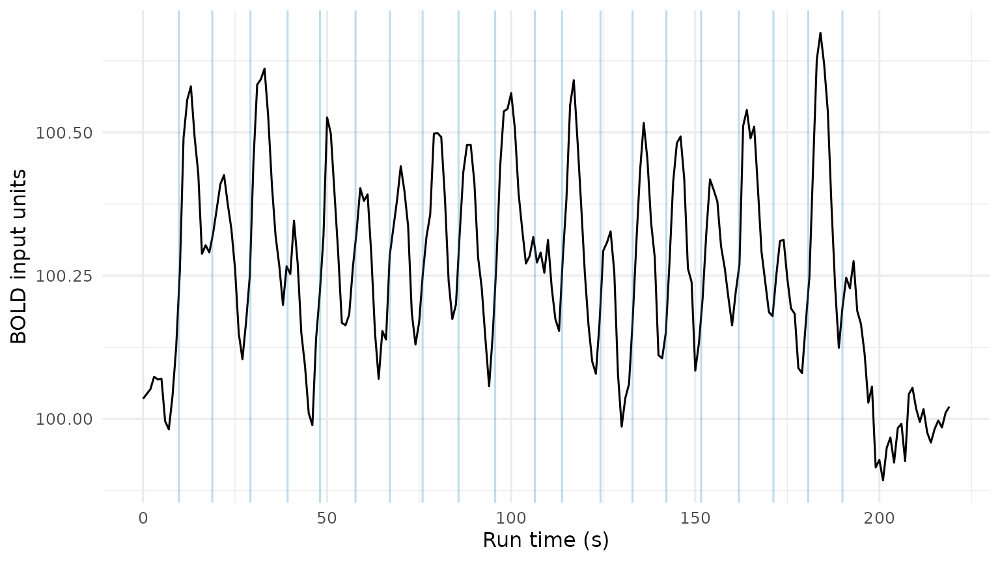
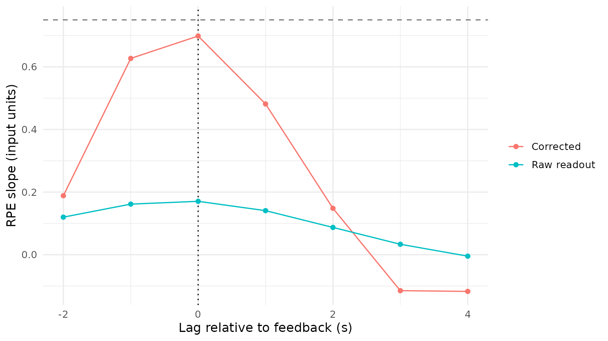

MEDuSA workflows: from BOLD runs to group inference
fmri.pipeline contributors
Source:vignettes/medusa-workflows.Rmd
medusa-workflows.RmdChoose the route that answers your question
Read the conceptual primer first
if HRF selection, regularization, or resolution matrices are unfamiliar.
This vignette uses the MEDuSA API through PR 62
and PR
64. Those revisions added post-selection
AR()
noise refitting, spike-robust GLS marginal observation-noise scaling,
exact subset Toeplitz covariance across censor gaps, order-invariant
multi-run GCV tuning, causal BOLD observability gating, post-demixing
covariate operator matching (M_post), task-free parcel
noise propagation (noise_innovations), cohort-comparable
precision weights (precision_weight_cohort),
spectrum-continuous ZCA whitening, joint multi-covariate/Level-2
trajectory inference (medusa_multilag_infer()), and
shared-error connectivity disattenuation
(decon_connectivity_repair(..., shared_error = "auto")). It
uses a small synthetic dataset so the core workflow runs without an
imaging dataset, AFNI, a scheduler, or external files. Blocks labeled
recipe; not executed require your study inputs. All
other R chunks execute when the vignette is rendered.
| Goal | Route | Important boundary |
|---|---|---|
| Deconvolve NIfTI runs and align/aggregate them using existing file workflows |
voxelwise_deconvolution() →
evt_align_decon_files() (or
run_decon_alignment()) |
Can use new scaling/penalties/readouts; does not automatically learn cross-run HRFs or de-mix epochs |
| Learn HRFs from other runs and quantify operator-based epoch effects |
estimate_crossrun_hrf() →
deconvolve_crossrun_hrf() →
decon_epoch_regression()
|
Requires named time-by-voxel matrices and explicit event/covariate matching |
| Compare a fixed canonical HRF with a learned HRF under the same downstream model | Use a one-column canonical library and a multi-candidate library in the matrix route | Keep lambda, penalty, noise, scale, and readout comparable |
The second route goes beyond the old pair of functions: epoch
regression uses the fitted inverse operator, not only a
saved activity CSV. Do not pass a legacy deconvolution file to
decon_epoch_regression() or run
evt_align_decon_files() on its panel. The panel is already
event aligned.
Use a package build containing these PRs. For a development checkout,
run pkgload::load_all(".") from the repository root before
rendering. Loading an older installed fmri.pipeline can
silently omit newer APIs in an interactive session; the check above
fails early if they are absent.
A small learning-task example
We start with three runs from one participant, with cue, decision, and feedback events. Decision duration is RT; feedback is brief. Six voxels differ in effect magnitude; three use the canonical HRF and three an earlier candidate. The true feedback RPE slope is known, which lets us compare recovery rather than rewarding an estimator simply for producing a large correlation.
Create events, covariates, and observed BOLD
The simulation uses an explicit acquisition-grid source and ordinary convolution, independent of the package’s native event-design builder. Durations use fractional bin occupancy; off-grid impulses split unit mass between neighboring bins. These are discrete modeling conventions, not evidence of sub-TR resolution.
set.seed(5401)
tr <- 1
n_time <- 220L
n_trials <- 20L
voxel_ids <- paste0("v", 1:6)
run_ids <- paste0("run", 1:3)
true_beta <- seq(0.5, 1.0, length.out = length(voxel_ids))
candidates <- hrf_library(tr, peak_delays = c(5, 6, 7),
dispersions = 1, undershoot_ratios = 6)
# Canonical (6, 1, 6) is placed first when present in hrf_library().
true_kernel_index <- c(1L, 1L, 1L, 2L, 2L, 2L)
source_column <- function(onset, duration, n, tr) {
left <- (0:(n - 1L)) * tr
if (duration > 0) {
return(pmax(0, pmin(left + tr, onset + duration) - pmax(left, onset)) / tr)
}
pmax(0, 1 - abs(left / tr - onset / tr))
}
forward_bold <- function(source, hrf) {
as.numeric(stats::convolve(source, rev(hrf), type = "open"))[seq_along(source)]
}
ar_noise <- function(n, rho, sigma) {
as.numeric(stats::arima.sim(list(ar = rho), n = n,
sd = sigma * sqrt(1 - rho^2)))
}
simulate_participant <- function(beta = true_beta) {
bold <- events <- covariates <- decision_covariates <- rt_by_run <- list()
for (r in run_ids) {
cue <- seq(6, by = 9.5, length.out = n_trials)
decision <- cue + runif(n_trials, 1.0, 1.6)
value <- as.numeric(scale(rnorm(n_trials)))
rt <- pmin(2.5, pmax(0.5, 1.4 - 0.25 * value + rnorm(n_trials, sd = 0.2)))
feedback <- decision + rt + runif(n_trials, 0.8, 1.5)
rpe <- as.numeric(scale(rnorm(n_trials)))
# Keep the event table sorted; event_index will refer to these exact rows.
ev <- rbind(
data.frame(onset = cue, duration = 0, condition = "cue", trial_id = 1:n_trials),
data.frame(onset = decision, duration = rt, condition = "decision", trial_id = 1:n_trials),
data.frame(onset = feedback, duration = 0, condition = "feedback", trial_id = 1:n_trials)
)
ev <- ev[order(ev$onset), ]
rownames(ev) <- NULL
E <- vapply(seq_len(nrow(ev)), function(i) {
source_column(ev$onset[i], ev$duration[i], n_time, tr)
}, numeric(n_time))
Y <- vapply(seq_along(voxel_ids), function(v) {
amplitude <- ifelse(ev$condition == "cue", 0.8,
ifelse(ev$condition == "decision",
1.0 + 0.35 * value[ev$trial_id],
0.6 + beta[v] * rpe[ev$trial_id]))
source <- as.numeric(E %*% amplitude)
100 + forward_bold(source, candidates[, true_kernel_index[v]]) + ar_noise(n_time, 0.35, 0.04)
}, numeric(n_time))
colnames(Y) <- voxel_ids
bold[[r]] <- Y
events[[r]] <- ev
# Rows must match the selected event records, not all events in the run.
fi <- ev$trial_id[ev$condition == "feedback"]
di <- ev$trial_id[ev$condition == "decision"]
covariates[[r]] <- data.frame(rpe = rpe[fi])
decision_covariates[[r]] <- data.frame(value = value[di])
rt_by_run[[r]] <- rt[di]
}
list(bold = bold, events = events, covariates = covariates,
decision_covariates = decision_covariates, rt_by_run = rt_by_run)
}
sim <- simulate_participant()
bold <- sim$bold
events <- sim$events
covariates <- sim$covariates
decision_covariates <- sim$decision_covariates
rt_by_run <- sim$rt_by_run
stopifnot(identical(names(bold), names(events)),
identical(names(bold), names(covariates)),
all(vapply(bold, function(y) identical(colnames(y), voxel_ids), logical(1))))
head(events$run1, 6)
#> onset duration condition trial_id
#> 1 6.000000 0.0000000 cue 1
#> 2 7.204565 1.5373418 decision 1
#> 3 9.744240 0.0000000 feedback 1
#> 4 15.500000 0.0000000 cue 2
#> 5 16.842436 0.9618848 decision 2
#> 6 18.806369 0.0000000 feedback 2BOLD matrices have time in rows and voxels in columns. Event onsets and durations are seconds on the same clock as the retained acquisitions; the first acquisition is zero here. Different run lengths are permitted. All runs must have the same TR and the same uniquely named voxels in the same spatial order. The six synthetic voxels are illustrative, not six independent participants.
Missing/censored observations should retain their rows. Supply a
named valid_rows list of logical masks rather than deleting
volumes and compressing time. If initial volumes were removed before
this workflow, either adjust event onsets into the retained clock or
supply the correct time_offset; do not do both. HRF fitting
includes an intercept and linear trend, plus any supplied nuisance
matrices. It does not perform your entire fMRI preprocessing
pipeline.
ggplot(data.frame(time = (0:(n_time - 1L)) * tr, bold = bold$run1[, 1L]),
aes(time, bold)) +
geom_line() +
geom_vline(xintercept = events$run1$onset[events$run1$condition == "feedback"],
color = "#0072B2", alpha = 0.25) +
labs(x = "Run time (s)", y = "BOLD input units") + theme_minimal(base_size = 12)
Observed BOLD from one synthetic voxel. Event overlap makes the individual cue, decision, and feedback contributions difficult to read directly.
Learn HRFs on other runs, then freeze them
hrf_fit <- estimate_crossrun_hrf(
bold = bold, events = events, tr = tr, kernel_grid = candidates,
amplitude_model = "trial", noise_model = "ar1", evidence = "calibrated",
pooling = "voxel", spatial_strength = 0, return_scores = TRUE
)
hrf_fit$training_runs$run1
#> [1] "run2" "run3"
head(hrf_fit$selections$run1)
#> target_run voxel parcel kernel_index kernel status
#> 1 run1 v1 <NA> 1 hrf_1 fallback_prespecified
#> 2 run1 v2 <NA> 1 hrf_1 voxel
#> 3 run1 v3 <NA> 1 hrf_1 voxel
#> 4 run1 v4 <NA> 2 hrf_2 voxel
#> 5 run1 v5 <NA> 2 hrf_2 voxel
#> 6 run1 v6 <NA> 2 hrf_2 voxel
#> n_training_runs n_parcel_voxels parcel_kernel_index best_kernel_index
#> 1 2 0 NA 1
#> 2 2 0 NA 1
#> 3 2 0 NA 1
#> 4 2 0 NA 2
#> 5 2 0 NA 2
#> 6 2 0 NA 2
#> best_adjusted_partial_r2 selected_adjusted_partial_r2 score_margin
#> 1 0.8100046 0.8100046 0.003692092
#> 2 0.8176680 0.8176680 0.009394145
#> 3 0.8230303 0.8230303 0.016287240
#> 4 0.8459539 0.8459539 0.022182580
#> 5 0.8607008 0.8607008 0.031898047
#> 6 0.8773729 0.8773729 0.034984267
#> voxel_evidence selected_task_p selected_shape_p
#> 1 inconsistent_or_misspecified 3.924796e-126 1.000000e+00
#> 2 prespecified_shape 3.468822e-126 1.000000e+00
#> 3 prespecified_shape 1.282989e-129 1.000000e+00
#> 4 supported_departure 2.547233e-141 5.144204e-14
#> 5 supported_departure 1.460327e-151 1.099962e-22
#> 6 supported_departure 3.376399e-162 2.777820e-26
#> n_compatible_shapes n_supported_shapes stability
#> 1 0 0 no_common_library_shape
#> 2 1 1 compatible_training_runs
#> 3 1 1 compatible_training_runs
#> 4 1 1 compatible_training_runs
#> 5 1 1 compatible_training_runs
#> 6 1 1 compatible_training_runsRun 1’s training manifest should list runs 2 and 3. Trial-amplitude
training is requested during this step; in closely coupled
multi-condition schedules, the implementation compares designs freeing
one condition at a time to reduce ambiguity. In every case, the RPE
values have not been supplied. We use
"trial" because trial modulation is central to the example,
but "condition" remains the faster default and deserves
comparison in real data. Weak or inconsistent evidence can retain the
first, prespecified canonical kernel.
Inspect the entire selection tables,
hrf_fit$signal_status, and hrf_fit$designs. A
plausible shape by eye is insufficient: check support, fallback reasons,
candidate scores, and stability across target runs. With only two runs,
a fold has only one training run and cannot assess compatibility across
training runs; when only a single run is available
(length(bold) == 1L), estimate_crossrun_hrf()
automatically partitions usable observations into contiguous temporal
sub-blocks (3 blocks for longer runs, 2 halves for shorter runs) scored
against the full causal event design and pooled with cross-block
compatibility testing while keeping the full continuous run intact for
deconvolve_crossrun_hrf(). Runs with zero task events (such
as resting-state or passive baseline runs) are retained as valid
observations with canonical fallback HRFs and pure-nuisance
AR()
noise estimates rather than discarded as insufficient.
Cross-fitting HRFs does not make the resulting folds independent
observations for inference.
Optional spatial borrowing recipe; not executed.
parcel_ids must be a named vector, independently defined,
with names exactly equal to the voxel column IDs. This is an alternative
fit, not an extra smoothing step on hrf_fit.
medusa_candidates <- hrf_library(tr, preset = "medusa")
parcel_fit <- estimate_crossrun_hrf(
bold, events, tr, medusa_candidates,
spatial_groups = parcel_ids, pooling = "parcel",
amplitude_model = "trial", noise_model = "ar1", evidence = "calibrated",
selection_mode = "soft_average"
)Here preset = "medusa" constructs the recommended
-spaced
27-candidate grid (peak_delays = seq(4.0, 8.0, by = 0.5),
dispersions = c(0.9, 1.0, 1.1)), and
selection_mode = "soft_average" computes a unit-sum
Boltzmann-weighted composite HRF
(parcel_fit$selected_kernels) shrunk toward
fallback_kernel by Empirical-Bayes parcel departure
confidence. In simulations with continuous sub-grid vascular delays and
nonlinear Windkessel-Balloon hemodynamics, pairing
preset = "medusa" with
selection_mode = "soft_average" reduces HRF waveform RMSE
by 8–22% and downstream neural latency error by 20–35% compared to
discrete hard selection (selection_mode = "hard"), while
avoiding the collinearity and
runtime cost of
grids. Hard parcel pooling (pooling = "parcel") shares one
composite HRF per parcel; pooling = "voxel" with
spatial_strength = 0.02 blends voxel and parcel weight
vectors via Empirical-Bayes concordance.
Recover continuous latent activity
decon <- deconvolve_crossrun_hrf(
bold, hrf_fit,
lambda = 0.1, scaling = "noise_sd", penalty = "sobolev", backend = "cpp",
nuisance_mode = "ignore", observation_mask = "fit", tail_padding = 0L
)
head(decon$scaling$run1)
#> run voxel status center scale noise_sd scaling noise_rho
#> 1 run1 v1 ok 100.2592 0.03825892 0.03825892 noise_sd 0.3731
#> 2 run1 v2 ok 100.2564 0.03935950 0.03935950 noise_sd 0.3731
#> 3 run1 v3 ok 100.2542 0.04308699 0.04308699 noise_sd 0.3731
#> 4 run1 v4 ok 100.2518 0.04642880 0.04642880 noise_sd 0.3731
#> 5 run1 v5 ok 100.2556 0.04335176 0.04335176 noise_sd 0.3731
#> 6 run1 v6 ok 100.2505 0.04129131 0.04129131 noise_sd 0.3731
#> n_observations
#> 1 220
#> 2 220
#> 3 220
#> 4 220
#> 5 220
#> 6 220
dim(decon$activity$run1)
#> [1] 220 6Here lambda = 0.1 is a fixed teaching value. In modern
(ar1 / calibrated) fits,
lambda = NULL is the default and automatically invokes
gain-calibrated, task-weighted adaptive prewhitened GCV
(hrf_tune_decon_lambda()) pooled across all usable runs in
an order-invariant manner over
lambda_grid = 10^seq(-2, 1.0, length.out = 16) (storing the
selected scalar in decon$settings$lambda and the full
diagnostic table—including var_level,
var_contrast, mtf_rel,
gcv_adaptive, and snr_task—in
decon$settings$lambda_tuning). Unlike naive
observation-space GCV across all voxels—which over-smooths event-related
activity when null voxels are present or per-TR signal power is
modest—adaptive prewhitened GCV filters to task-supported voxels/parcels
from hrf_fit$selections and balances Stage-3 gain-restored
level/contrast variance against the operator’s modulation transfer
function, automatically adapting
across fSNR regimes and acquisition TRs. For legacy (ols /
legacy) fits, omitting lambda still raises an
error unless lambda = NULL is passed explicitly.
scaling = "noise_sd" centers the input and divides by an
estimate of marginal observation-noise SD
()—not
the AR innovation SD
and not total temporal SD. In modern (ar1 /
calibrated) fits with sufficient residual degrees of
freedom, hrf_estimate_gls_noise_sd() estimates
from leverage-standardized, Winsorized GLS residuals under the selected
HRF and
AR()
correlation model, using an
AR()-adjusted
residual second-difference scale
(estimate_decon_noise_sd()) as an omitted-event guard and
low-df/legacy fallback. Because "noise_sd",
"demean", and "zscore" center each run on
usable observations, tonic between-run or between-person BOLD baselines
are removed by construction. The scale table
(decon$scaling$run1) records center,
scale, noise_sd, and validity status. Activity
matrices preserve the acquisition grid and carry timing attributes. Use
decon$activity for continuous diagnostics; retain the
whole object for epoch regression.
We set nuisance_mode = "ignore" explicitly to match the
default and use data with no simulated drift. In a study, use
appropriately cleaned input or a validated joint nuisance model.
Nuisance regressors supplied for HRF training are not
automatically removed by the inverse under
"ignore". "joint" fits nuisance terms in the
inverse, but can make low-frequency activity weakly identified; assess
recovery rather than assuming it is superior. Censored acquisition rows
are omitted from the observation fit but still have model-based latent
estimates on the full grid. Such estimates are not directly observed
data.
Audit the frozen inverse before interpreting it
recovery <- diagnose_crossrun_recovery(decon, events = events, lags = 0)
knitr::kable(recovery$summary[, c("run", "fitted_kernel", "n_voxels",
"mean_gain", "mean_abs_excess_leakage")], digits = 3)| run | fitted_kernel | n_voxels | mean_gain | mean_abs_excess_leakage |
|---|---|---|---|---|
| run1 | hrf_1 | 3 | 0.378 | 0.012 |
| run1 | hrf_2 | 3 | 0.409 | 0.012 |
| run2 | hrf_1 | 6 | 0.381 | 0.013 |
| run3 | hrf_1 | 6 | 0.387 | 0.013 |
This diagnostic injects each event separately through the fitted
forward/inverse system and measures gain and excess leakage. It reuses
the recorded masks, noise, penalty, and centering; it neither refits the
HRF nor automatically corrects the activity. Its default point readout
differs from the triangle readout below, so its gains need not equal
epoch regression’s gains. A positive-duration source has unit
height, not unit area. These are conditional model
diagnostics, not confidence intervals or measurements of the unknown
true HRF. source_kernel_grid can evaluate prespecified
alternative generating HRFs. For a single fixed-HRF/file workflow,
deconvolution_impulse_diagnostics() provides the analogous
isolated-impulse audit.
Read out feedback effects and correct event mixing
feedback_fit <- decon_epoch_regression(
deconvolution = decon, covariates = covariates, events = events,
target_condition = "feedback", lags = seq(-2, 4, by = 1),
source_model = "impulse", readout_kernel = "triangle", readout_width = 1.5 * tr,
demix_other_events = TRUE, demix_target_trials = TRUE,
demix_within_trial = TRUE, weighting = "precision", whiten_panel = TRUE,
restore_scale = TRUE, return_panel = TRUE
)
knitr::kable(feedback_fit$summary, digits = 3)| lag | term | mean_beta_raw | mean_beta_corrected | mean_beta_multilag | mean_beta_unweighted | mean_beta_weighted | mean_beta_gls | mean_r_raw | mean_r_demixed | mean_tau2_bio | mean_gain | mean_se_trial | mean_error_ac1 | n_voxels |
|---|---|---|---|---|---|---|---|---|---|---|---|---|---|---|
| -2 | rpe | 0.120 | 0.188 | 0.197 | 0.188 | 0.188 | 0.185 | 0.732 | 0.356 | 0.184 | 0.233 | 0.252 | -0.060 | 6 |
| -1 | rpe | 0.162 | 0.627 | 0.621 | 0.627 | 0.627 | 0.625 | 0.844 | 0.816 | 0.246 | 0.233 | 0.248 | -0.059 | 6 |
| 0 | rpe | 0.171 | 0.698 | 0.697 | 0.700 | 0.698 | 0.698 | 0.913 | 0.875 | 0.207 | 0.233 | 0.312 | -0.082 | 6 |
| 1 | rpe | 0.141 | 0.482 | 0.480 | 0.474 | 0.482 | 0.480 | 0.940 | 0.767 | 0.147 | 0.233 | 0.298 | 0.059 | 6 |
| 2 | rpe | 0.087 | 0.148 | 0.143 | 0.142 | 0.148 | 0.147 | 0.837 | 0.283 | 0.129 | 0.233 | 0.312 | -0.092 | 6 |
| 3 | rpe | 0.033 | -0.115 | -0.103 | -0.121 | -0.115 | -0.114 | 0.370 | -0.337 | 0.041 | 0.233 | 0.249 | -0.045 | 6 |
| 4 | rpe | -0.005 | -0.117 | -0.128 | -0.114 | -0.117 | -0.117 | -0.036 | -0.254 | 0.130 | 0.233 | 0.256 | -0.057 | 6 |
The correction uses the specified source model and readout to reduce
mixing from other event types, overlapping target trials, and, with
demix_within_trial = TRUE, neighboring lags. Here
demix_within_trial = TRUE sharpens descriptive
single-participant multi-lag curves; when pooling subjects in
medusa_multilag_infer() below, leave
demix_within_trial = FALSE so group-level spectral
de-blurring and correlated-SURE P-spline smoothing operate on the
unsharpened lag covariance. With the default
demix_ridge = 0.05, non-target subtraction uses
condition-mean sources; trial-varying cue effects can survive it,
whereas a smaller value below 0.03 activates a joint
regularized
correction with its own bias–variance tradeoff. When regressing against
supplied covariates, decon_epoch_regression()
also applies the matched post-demixing resolution operator
(,
normalized per trial row) to centered within-run predictors so residual
off-diagonal target shrinkage at rapid ISIs does not attenuate or
over-inflate slope estimates.
MEDuSA propagates the fitted temporal covariance through the frozen
inverse and readout to compute conditional se_raw and
se_demixed, using the exact stationary
AR()
Toeplitz covariance subset on retained acquisition indices across censor
gaps. Trial-lags with insufficient unmasked causal BOLD support
(obs_frac_tau < 0.20, e.g., inside long scrub gaps or
past the end of acquisition) are gated to NA rather than
extrapolated from smoothness penalties. Parcel aggregation
(aggregate_by_parcel = TRUE) occurs before epoch fitting,
combining exact per-stratum forward/inverse operators and propagating
within-parcel spatial noise covariance from task-free Step-1 whitened
noise_innovations (retaining
shared_noise_loading on the panel for downstream
cross-parcel connectivity). Preserve non-target events in the event
table and align each covariate row to its target event.
restore_scale = TRUE reports effects in original input
units under the unit-sum HRF convention. It reverses the scaling
divisor; it does not make estimates physiologically calibrated or
guarantee unbiased amplitudes (in between-participant comparisons,
unit-sum HRF normalization means regional vascular reactivity gain still
scales BOLD-unit slopes alongside neural gain). beta_raw is
the uncorrected readout under this same inverse, not the historical Bush
pipeline. beta_corrected includes model-based de-mixing,
gain correction, matched
covariate alignment, and (when weighting = "precision", the
default) Empirical-Bayes precision weighting; beta_gls uses
the function’s GLS path for the supplied covariates. The optional
exported ZCA columns use a spectrum-continuous,
centered-trace-stabilized transform of the working trial covariance.
Correlations in a multi-predictor result are marginal correlations with
each predictor, not partial correlations.
s <- feedback_fit$summary
plot_df <- rbind(
data.frame(lag = s$lag, beta = s$mean_beta_raw, estimate = "Raw readout"),
data.frame(lag = s$lag, beta = s$mean_beta_corrected, estimate = "Corrected")
)
ggplot(plot_df, aes(lag, beta, color = estimate)) +
geom_hline(yintercept = mean(true_beta), linetype = "dashed", color = "grey50") +
geom_vline(xintercept = 0, linetype = "dotted") + geom_line() + geom_point() +
labs(x = "Lag relative to feedback (s)", y = "RPE slope (input units)", color = NULL) +
theme_minimal(base_size = 12)
Raw and corrected feedback RPE slopes. The dashed line marks the simulated onset effect averaged across voxels. Nonzero lag analyses shift the assumed source as well as the readout; they are not independent temporal measurements.
at_zero <- subset(feedback_fit$coefficients, lag == 0)
knitr::kable(data.frame(
voxel = at_zero$voxel,
truth = true_beta[match(at_zero$voxel, voxel_ids)],
raw = at_zero$beta_raw,
corrected = at_zero$beta_corrected,
gls = at_zero$beta_gls,
se_weighted = at_zero$se_weighted,
se_gls = at_zero$se_gls
), digits = 3)| voxel | truth | raw | corrected | gls | se_weighted | se_gls |
|---|---|---|---|---|---|---|
| v1 | 0.5 | 0.107 | 0.460 | 0.457 | 0.048 | 0.047 |
| v2 | 0.6 | 0.134 | 0.551 | 0.550 | 0.048 | 0.047 |
| v3 | 0.7 | 0.152 | 0.639 | 0.636 | 0.044 | 0.044 |
| v4 | 0.8 | 0.181 | 0.710 | 0.714 | 0.053 | 0.053 |
| v5 | 0.9 | 0.206 | 0.863 | 0.863 | 0.043 | 0.043 |
| v6 | 1.0 | 0.243 | 0.966 | 0.967 | 0.051 | 0.051 |
Keep a fixed-HRF comparator
A one-column library supplies the canonical baseline through the same public API. Keep every downstream setting matched, so that this comparison changes the HRF choice rather than also changing penalty, units, and source model.
canonical_fit <- estimate_crossrun_hrf(
bold, events, tr, candidates[, 1L, drop = FALSE],
amplitude_model = "trial", noise_model = "ar1", evidence = "calibrated"
)
canonical_decon <- deconvolve_crossrun_hrf(
bold, canonical_fit, lambda = 0.1, scaling = "noise_sd", penalty = "sobolev",
backend = "cpp", nuisance_mode = "ignore", observation_mask = "fit", tail_padding = 0L
)
canonical_feedback <- decon_epoch_regression(
canonical_decon, covariates, events = events, target_condition = "feedback",
lags = 0, source_model = "impulse", readout_kernel = "triangle",
readout_width = 1.5 * tr, restore_scale = TRUE
)
comparison <- data.frame(
voxel = voxel_ids,
true_hrf_column = true_kernel_index,
true_beta = true_beta,
fixed_hrf_beta = canonical_feedback$coefficients$beta_corrected[
match(voxel_ids, canonical_feedback$coefficients$voxel)],
learned_hrf_beta = at_zero$beta_corrected[match(voxel_ids, at_zero$voxel)]
)
knitr::kable(comparison, digits = 3)| voxel | true_hrf_column | true_beta | fixed_hrf_beta | learned_hrf_beta |
|---|---|---|---|---|
| v1 | 1 | 0.5 | 0.502 | 0.460 |
| v2 | 1 | 0.6 | 0.616 | 0.551 |
| v3 | 1 | 0.7 | 0.695 | 0.639 |
| v4 | 2 | 0.8 | 0.786 | 0.710 |
| v5 | 2 | 0.9 | 0.892 | 0.863 |
| v6 | 2 | 1.0 | 1.038 | 0.966 |
This is one noisy realization of a matched model. Exact truth recovery is not a pass criterion, and this example does not measure population power or false-positive control. Hold the HRF/inverse fixed when comparing raw and corrected estimates, then vary assumptions separately. The longer technical review and repository validation scripts examine additional recovery targets and model violations.
Model a decision interval using its actual duration
An RPE at feedback and a value signal during deliberation need not use the same source model. Our events already describe decision-start onsets with RT durations. We now ask whether decision height/rate, rather than duration-integrated activity, covaries with value.
decision_fit <- decon_epoch_regression(
deconvolution = decon, covariates = decision_covariates, events = events,
target_condition = "decision", lags = c(0, 1),
source_model = "duration", trial_durations = rt_by_run, duration_scale = "rate",
readout_kernel = "triangle", readout_width = 1.5 * tr,
restore_scale = TRUE, return_panel = TRUE
)
knitr::kable(decision_fit$summary, digits = 3)| lag | term | mean_beta_raw | mean_beta_corrected | mean_beta_multilag | mean_beta_unweighted | mean_beta_weighted | mean_beta_gls | mean_r_raw | mean_r_demixed | mean_tau2_bio | mean_gain | mean_se_trial | mean_error_ac1 | n_voxels |
|---|---|---|---|---|---|---|---|---|---|---|---|---|---|---|
| 0 | value | 0.070 | 0.367 | 0.367 | 0.365 | 0.367 | 0.373 | 0.533 | 0.449 | 0.305 | 0.316 | 0.134 | 0.048 | 6 |
| 1 | value | 0.055 | 0.286 | 0.286 | 0.286 | 0.286 | 0.193 | 0.360 | 0.329 | 0.418 | 0.316 | 0.135 | 0.055 | 6 |
The known simulated decision-height slope is 0.35. Compare the table with that value: a duration-aware source does not by itself eliminate HRF uncertainty, noise, or ambiguity between nearby events. The feedback and decision analyses need not recover their respective truths equally well.
trial_durations contains only target decision durations,
in the order of decision rows within each run’s event table. Omitting it
uses events[[r]]$duration. Providing it without an explicit
source model selects "duration"; explicit arguments here
make the hypothesis reviewable. Use
duration_scale = "integral" for total discrete source mass
instead of height. These are different estimands and should not be
compared as if their coefficients had the same units.
At lag zero, the source begins at decision onset and ends RT seconds later; the readout follows its midpoint and width. Lag one moves that whole interval one second later. RT-matched modeling can reduce duration-induced confounding if the hypothesis is correct, but cannot establish that the entire RT interval represents a constant neural process. Compare alternatives using a design-based rationale and active-null simulations.
Inspect the trial panel and preserve identity
panel <- as.data.frame(feedback_fit$panel)
panel$id <- "sim01"
# event_index indexes the original events table; trial is a target-row counter.
panel$trial_id <- vapply(seq_len(nrow(panel)), function(j) {
events[[panel$run[j]]]$trial_id[panel$event_index[j]]
}, integer(1))
head(panel[, c("id", "run", "trial", "event_index", "trial_id", "evt_time",
"voxel", "decon_raw", "decon_demixed", "se_demixed",
"precision_weight", "precision_weight_cohort", "error_ac1",
"decon_demixed_whitened", "rpe", "rpe_whitened")])
#> id run trial event_index trial_id evt_time voxel decon_raw decon_demixed
#> 1 sim01 run1 1 3 1 -2 v1 0.39980863 -0.10148459
#> 2 sim01 run1 2 6 2 -2 v1 0.24213547 -1.27971761
#> 3 sim01 run1 3 9 3 -2 v1 0.49067530 0.25707538
#> 4 sim01 run1 4 12 4 -2 v1 0.04568107 -0.57783700
#> 5 sim01 run1 5 15 5 -2 v1 0.31797264 0.02838822
#> 6 sim01 run1 6 18 6 -2 v1 0.17209511 -0.48565273
#> se_demixed precision_weight precision_weight_cohort error_ac1
#> 1 0.2252475 1.038526 4.418852 0.000000000
#> 2 0.2186491 1.052143 4.476794 -0.002476644
#> 3 0.2280089 1.032814 4.394547 -0.132477747
#> 4 0.2135799 1.062566 4.521141 -0.161829601
#> 5 0.2226519 1.043888 4.441670 0.027277444
#> 6 0.2266765 1.035570 4.406277 -0.095205992
#> decon_demixed_whitened rpe rpe_whitened
#> 1 -0.1008638 0.1181378 0.1212948
#> 2 -1.2853923 -0.3123133 -0.2738054
#> 3 0.2560856 1.8923639 1.8726367
#> 4 -0.5585641 -1.1696051 -1.1669054
#> 5 0.0328286 -0.4224070 -0.4222070
#> 6 -0.4809110 -1.0995872 -1.1080400
stopifnot(!anyDuplicated(panel[c("id", "run", "trial_id", "evt_time", "voxel")]),
all(is.finite(panel$decon_demixed)),
all(is.finite(panel$precision_weight) & panel$precision_weight > 0),
all(is.finite(panel$precision_weight_cohort) & panel$precision_weight_cohort > 0))run, trial, event_index,
onset, evt_time, and voxel
describe each observation; decon_raw and
decon_demixed contain its readouts; se_raw,
se_demixed, precision_weight,
precision_weight_cohort, and error_ac1 capture
the operator-propagated per-trial standard errors, within-unit mean-1
precision weights (precision_weight), unnormalized
cohort-comparable inverse total variance weights
(precision_weight_cohort, which preserve
between-participant reliability differences in multi-subject mixed
models), and lag-1 trial error autocorrelation. When
aggregate_by_parcel = TRUE, the panel also carries a
list-column shared_noise_loading so cross-parcel noise
correlations survive data.table::rbindlist() for
decon_connectivity_repair(..., shared_error = "auto").
Because whiten_panel = TRUE was requested,
decon_demixed_whitened and rpe_whitened also
provide within-run ZCA-decorrelated trial responses and centered
covariates. trial is not necessarily your original
behavioral trial ID. Join behavior through the preserved
event-row mapping, then validate one-to-one identity at the intended
grain. Add participant and session IDs explicitly before combining
people; do not let identical run names imply identical participants.
The finite-value assertion is appropriate to this complete synthetic
dataset. In real data, report retained trials by run/lag/voxel,
investigate missing estimates, and never silently discard a participant
with sparse support. summary averages across usable voxels
and is descriptive; it is not a population analysis.
Run the workflow across participants
This example generates independent participants with varying RPE
slopes, repeats the three preprocessing calls, and preserves two
independently specified teaching parcels. The scientific contrast is the
feedback-onset RPE slope in Parcel_A. The fixed teaching
penalty matches the single-participant walkthrough above.
set.seed(5412)
parcel_ids <- setNames(rep(c("Parcel_A", "Parcel_B"), each = 3L), voxel_ids)
lags_group <- -2:4
participant_ids <- sprintf("sim%02d", seq_len(12L))
fit_one <- function(id) {
subject <- simulate_participant(true_beta + rnorm(1L, sd = .12))
fit <- estimate_crossrun_hrf(
subject$bold, subject$events, tr, candidates, amplitude_model = "trial",
noise_model = "ar1", evidence = "calibrated"
)
dec <- deconvolve_crossrun_hrf(
subject$bold, fit, lambda = .1, scaling = "noise_sd", penalty = "sobolev",
nuisance_mode = "ignore", observation_mask = "fit"
)
ep <- decon_epoch_regression(
dec, subject$covariates, target_condition = "feedback", lags = lags_group,
parcel_groups = parcel_ids, restore_scale = TRUE,
demix_within_trial = FALSE, tau2_mode = "marginal", return_panel = TRUE
)
panel_i <- data.table::copy(ep$panel)
panel_i[, id := id]
for (run_i in names(subject$events)) {
observed <- panel_i[run == run_i]
records <- subject$events[[run_i]][observed$event_index, ]
stopifnot(all(records$condition == "feedback"),
isTRUE(all.equal(observed$onset, records$onset)))
}
stopifnot(!anyDuplicated(panel_i[, .(id, run, event_index, evt_time, parcel)]),
all(panel_i$precision_weight > 0), all(is.finite(panel_i$se_demixed)))
ep$panel <- panel_i
ep
}
subject_epochs <- setNames(lapply(participant_ids, fit_one), participant_ids)
group_panel <- data.table::rbindlist(lapply(subject_epochs, "[[", "panel"))
group_panel[, rpe_within := rpe - mean(rpe), by = .(id, run, parcel, evt_time)]
planned <- group_panel[parcel == "Parcel_A" & evt_time == 0]
stopifnot(data.table::uniqueN(planned$id) == length(participant_ids),
nrow(planned) == length(participant_ids) * length(run_ids) * n_trials)
group_result <- mixed_by(
planned, model_formulae = list(
feedback = decon_demixed ~ rpe_within + (1 + rpe_within || id) + (1 | id:run)
),
weights = "precision_weight_cohort", calculate = "parameter_estimates_reml",
padjust_by = NULL, return_models = TRUE
)
#> Using model_formulae to setup model_set
#> Registered S3 method overwritten by 'formula.tools':
#> method from
#> as.character.formula fmri.pipeline
#> Starting processing of data splits
#> Loading required package: Matrix
#>
#> Attaching package: 'lmerTest'
#> The following object is masked from 'package:lme4':
#>
#> lmer
#> The following object is masked from 'package:stats':
#>
#> step
#>
#> Attaching package: 'data.table'
#> The following object is masked from 'package:base':
#>
#> %notin%
#>
#> Attaching package: 'dplyr'
#> The following objects are masked from 'package:data.table':
#>
#> between, first, last
#> The following objects are masked from 'package:stats':
#>
#> filter, lag
#> The following objects are masked from 'package:base':
#>
#> intersect, setdiff, setequal, union
#> Welcome to emmeans.
#> Caution: You lose important information if you filter this package's results.
#> See '? untidy'
group_fit <- group_result$models$model[[1L]]$reml
knitr::kable(subset(group_result$coef_df_reml, term == "rpe_within")[
, c("estimate", "std.error", "df", "p.value"), with = FALSE], digits = 3)| estimate | std.error | df | p.value |
|---|---|---|---|
| 0.525 | 0.021 | 10.303 | 0 |
lme4::isSingular(group_fit)
#> [1] FALSEPassing weights = "precision_weight_cohort" preserves
relative reliability differences across participants as well as across
runs and trials (mixed_by() normalizes finite positive
weights across the whole cohort split rather than forcing every
participant’s mean weight to one as precision_weight does).
Weights model conditional residual spread through the inverse weight;
they do not remove within-run serial dependence. A transformed analysis
needs the matched response and predictor columns from the same parcel
and lag, plus a check of remaining dependence. Inspect singularity,
residuals, and participant support before interpreting the fixed-effect
SE. This example has one planned test. If you examine more parcels or
lags, define the test family before fitting.
Joint trajectory and connectivity inference (PRs 62 & 64)
The named subject results retain resolution and error-correlation
summaries (demix_within_trial = FALSE above leaves
cross-lag deblurring to Stage 4). On panel or epoch-list inputs,
medusa_multilag_infer() fits joint within-run
multiple regression across all supplied time-varying
covariates (including
covariate alignment), supports Level-2 between-participant traits via
WLS + HC2 inference, retains participants with partial lag support via
available-case pooling across lags, and defaults planned linear window
contrasts to unbiased contrast_source = "unsmoothed". The
example uses "none" to keep the raw lag estimand and
reports one prespecified parcel.
trajectory <- medusa_multilag_infer(
subject_epochs, covariates = "rpe", use_whitened = FALSE,
trajectory_mode = "none", contrast_source = "unsmoothed",
tr = tr, n_perm = 1999L, n_boot_latency = 0L, seed = 5420L
)
knitr::kable(
subset(trajectory$coefficients, parcel == "Parcel_A")[
, c("lag", "estimate", "conf.low.sim", "conf.high.sim", "p_maxT"), with = FALSE],
digits = 3
)| lag | estimate | conf.low.sim | conf.high.sim | p_maxT |
|---|---|---|---|---|
| -2 | 0.291 | 0.231 | 0.350 | 0.000 |
| -1 | 0.457 | 0.391 | 0.524 | 0.000 |
| 0 | 0.535 | 0.466 | 0.604 | 0.000 |
| 1 | 0.488 | 0.423 | 0.553 | 0.000 |
| 2 | 0.344 | 0.294 | 0.394 | 0.000 |
| 3 | 0.167 | 0.137 | 0.197 | 0.000 |
| 4 | 0.027 | -0.005 | 0.059 | 0.102 |
n_perm counts studentized Wishart/Mahalanobis parametric
null draws (incorporating Marra–Wood smoothing-variance inflation when
trajectory_mode smooths across lags). The simultaneous band
and Max-|T| tests cover the lags within one parcel–term trajectory; TFCE
and omnibus inference use that same family, whereas claims across
parcels or terms need a study-wide multiplicity procedure. For
trial-level seed-to-target connectivity or PPI on
group_panel, use
decon_connectivity_repair(group_panel, seed_region = "Parcel_A", target_region = "Parcel_B", covariates = "rpe", test_ppi = TRUE, use_whitened = FALSE, orthogonalize_seed_x = FALSE, shared_error = "auto", method = "mmoms", region_col = "parcel"),
which uses shared_noise_loading to disattenuate seed
measurement error while subtracting cross-parcel shared-noise covariance
and pooling subjects via HKSJ random-effects weights. Save the full
subject_epochs objects and analysis settings, including the
lag grid, parcel labels, and random seed.
Saving recipe; not executed. Keeping only the panel loses the fitted operator context needed for audits.
saveRDS(list(hrf_fit = hrf_fit, deconvolution = decon,
feedback = feedback_fit, decision = decision_fit,
events = events, covariates = covariates,
session_info = sessionInfo()), "subject_medusa.rds")Bridge from NIfTI runs to the matrix route
Real-data recipe; not executed.
nifti_paths is a named vector of one participant’s
preprocessed runs; mask_path identifies the voxels to
retain. Verify shared space, dimensions, voxel sizes, and
orientation/affine before extracting. Equal array
dimensions alone are not enough. Keep this voxel metadata with the
fit.
nifti_paths <- c(run1 = "/study/sub01/run1_preprocessed.nii.gz",
run2 = "/study/sub01/run2_preprocessed.nii.gz",
run3 = "/study/sub01/run3_preprocessed.nii.gz")
mask_path <- "/study/sub01/analysis_mask.nii.gz"
mask_img <- RNifti::readNifti(mask_path)
mask_array <- as.array(mask_img)
voxel_indices <- which(is.finite(mask_array) & mask_array > 0)
ijk <- arrayInd(voxel_indices, dim(mask_array))
voxel_ids <- apply(ijk, 1L, function(x) paste(x, collapse = "_"))
# Prefer a valid sform, otherwise qform. Resolve inconsistent headers first.
mask_affine <- RNifti::xform(mask_img, useQuaternionFirst = FALSE)
stopifnot(attr(mask_affine, "code") > 0)
bold <- lapply(nifti_paths, function(path) {
img <- RNifti::readNifti(path)
affine <- RNifti::xform(img, useQuaternionFirst = FALSE)
stopifnot(identical(as.integer(dim(img)[1:3]), as.integer(dim(mask_img))),
attr(affine, "code") > 0,
isTRUE(all.equal(as.numeric(RNifti::pixdim(img)[1:3]),
as.numeric(RNifti::pixdim(mask_img)[1:3]))),
isTRUE(all.equal(unname(affine), unname(mask_affine),
check.attributes = FALSE)))
# Public RNifti/R array route: reshape as VOXEL x TIME, select, transpose.
# This materializes the image; use a modest mask/run size for this recipe.
volume <- matrix(as.numeric(img), nrow = prod(dim(img)[1:3]))
y <- t(volume[voxel_indices, , drop = FALSE])
colnames(y) <- voxel_ids
y
})
voxel_map <- data.frame(voxel = voxel_ids, linear_index = voxel_indices,
i = ijk[, 1], j = ijk[, 2], k = ijk[, 3])Build events, covariate lists, nuisance matrices, and
logical masks from your study using exactly names(bold) and
matching order. Check the acquisition TR from the sequence/headers and
all event clocks. Pass these to the same three matrix functions used
above. This is a manual adapter, not an automatically integrated NIfTI
cross-run pipeline. Chunking the voxel dimension may be needed for large
masks, but changes to noise pooling or parcel support must be accounted
for; splitting voxels arbitrarily need not reproduce a whole-mask
fit.
Keep or update the established file workflow
File workflow recipe; not executed. This shows
explicit linear-method settings while retaining file-based alignment.
Paths and trial_df must be replaced with study inputs. Use
a fresh output directory because existing output files are skipped and
may retain older scaling behavior.
voxelwise_deconvolution(
niftis = unname(nifti_paths),
add_metadata = data.frame(id = "sub01", run = names(nifti_paths)),
out_dir = "/study/medusa_linear", TR = tr, atlas_files = atlas_path,
mask = mask_path, nprocs = 1L, algorithm = "reglin",
decon_settings = list(
kernel = hrf_library(tr, peak_delays = 6, dispersions = 1,
undershoot_ratios = 6)[, 1L],
scaling = "noise_sd", penalty = "sobolev", lambda = 0.1,
backend = "cpp", prewhiten_gcv = TRUE, tail_padding = 0L
)
)
# Locate only the desired atlas's deconvolved files after the call above.
d_files <- list.files("/study/medusa_linear/atlas/deconvolved",
pattern = "_deconvolved\\.csv\\.gz$", full.names = TRUE)
aligned <- evt_align_decon_files(
d_files = d_files, trial_df = trial_df,
alignment = list(evt_col = "feedback_onset", time_before = -2, time_after = 4,
output_resolution = 1, overlap_policy = "allow",
readout_kernel = "triangle", readout_width = 1.5 * tr),
aggregate_by = "atlas_value", tr = tr, ncpus = 1L, fail_on_error = TRUE
)
attr(aligned, "file_status")Here atlas_path is the chosen registered atlas, and
trial_df contains id, run, trial
identity, and a feedback_onset column in the appropriate
run clock. Replace the atlas directory component with the
actual atlas basename. The file alignment list calls its onset field
evt_col; the lower-level
get_medusa_interpolated_ts() helper calls it
event. Metadata sidecars identify files;
file_manifest can explicitly map file,
id, run, and optional session
when needed. The returned status manifest reports file-level failures.
Inspect decon_status, epoch_status, and
support/clock diagnostics before fitting models.
overlap_policy = "allow" retains overlapping requested
windows. Use "truncate" with appropriate
collide_before/collide_after columns when the
scientific goal calls for collision boundaries, or
"exclude" for excluding overlapping target windows. Neither
is equivalent to operator-based de-mixing. The valid_col
option applies censoring to alignment source rows; it
is not a behavioral trial-exclusion flag. Kernel readout and aggregation
operate on supported unit-level segments before group averaging.
The default file algorithm remains "bush2011", with
z-scored input and bounded encoding outputs. Selecting
"reglin" is deliberate here: Bush encodings and linear
amplitudes have different meanings, and non-zscore input modes are not
supported by the voxelwise Bush route. This recipe uses a fixed
canonical HRF. The file wrapper can also tune supplied candidates within
a run, but that is not leave-one-run-out HRF learning.
Settings and checks at each handoff
| Handoff | Settings to record | Check before proceeding |
|---|---|---|
| Input to HRF/noise fit | TR, offsets, masks, candidate library, spatial_groups
and optional noise_groups
|
Confirm clocks, retained acquisition indices, target-run exclusion for HRF selection, gap-local AR() noise fits, and fallback strata. |
| HRF/noise fit to inverse |
lambda or tuning grid, penalty, nuisance mode,
scaling |
In PRs 62 & 64, scaling = "noise_sd" estimates
marginal observation-noise SD
()
via leverage-adjusted Winsorized GLS residuals, and
lambda = NULL pools adaptive GCV across all usable runs.
Examine estimated scales, fit residuals, and tuning diagnostics. |
| Inverse to event measurements | Source duration and units, readout, demixing, target condition and lag grid | Verify event-row identity, causal BOLD observability
(obs_frac_tau >= 0.20), matched
covariate alignment, and rate versus integrated activity for duration
models. |
| Event measurements to parcel panel | Parcel labels, restore_scale, tau2_mode,
whiten_panel
|
Audit usable voxels, task-free noise_innovations
spatial covariance, and retained trials by run. Distinguish within-run
precision_weight from cohort-comparable
precision_weight_cohort and retain
shared_noise_loading for connectivity. |
| Panel to group claim | Participant/run effects, predictors, weights, trajectory/connectivity mode, test family | Check participant counts, residual dependence, singularity,
contrast_source = "unsmoothed",
shared_error = "auto", and whether the test applies to one
lag, one trajectory, or a whole study family. |
Earlier MEDuSA documents may describe pre-PR 62 second-difference noise scaling, first-run GCV tuning, or single-covariate trajectory pooling. Use the installed version’s help for argument names and preserve the software revision alongside the fitted objects.
Before interpreting a result
- Verify event clocks, geometry, IDs, and target-row order before inspecting effects.
- Compare fixed and learned HRFs under matched inverse/readout settings; inspect fallbacks and noise estimates.
- Check scaling units and source meaning, especially height versus integrated duration effects.
- Simulate the actual schedule with both real effects and active nulls; examine amplitude, correlation, timing, and uncertainty separately.
- Inspect retained trial counts, gains, boundary effects, and sensitivity to penalties, lambda, and readout width. Small gains imply potentially unstable correction.
- Carry participant/session IDs and appropriate dependence into group inference. Report settings and software revision with saved objects.
The technical review supplies deeper equations and demonstrations. The primer’s reading guide connects each choice to neuroscience and statistics precedents.